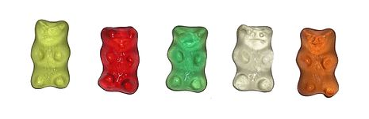

There is a list of sweets
This project is very important topic for my tuck shop
A lollipop is a confectioney type of sugar candy usually consiting of hard candy mounted on a stick and intented for sucking and licking. They are available in many vibrant and luminous colours and flavours, particulary fruit flavours. With numerous companies lollipops, the candy now comes in dozens of flavours and many different shapes such as circle, triangle and square. They range from petite ones which can be bought by the hundred and are often given away for free at banks, barbershops, salons and other locations, to enormous made out of candy canes twisted into circluar shape.
The idea of an edible candy on a stick is very simple; it's proabable that the lollipop has been invented and reinvented numerouys times. The first confectioneries that closley resemple that we call lollipops date to the Middle Ages which was in 15th century, when the nobility would often eat boiled sugar with the aid stick and handles. The invention of the moderen lollipop is stil something of mystery but a number of American companies in the early 20th century have laid claim to it. According to the book called "Food For Thought: Extraordinary Little Chronicles of the World", they were invented by George Smith of New Haven, Connecticut, who started making large hard candies mounted on sticks in 1908 which was in 20th century. Smith named them after a racehorse of the time, Lolly Pop- and trademarked the lollipop name in 1931.
The term 'lollipop' was recorded by English lexicographer Francis Grose in 1796 which was in late 18th century. The term may have derived from the term "lolly" which is tongue and "pop" which is slap. The first references to the lollipop in its modern times to the 1920s. Alternatively, it may be a word of Romany orgin being related to the roma tadition of selling caramel apples sold on a stick. Red Apple in the Romany language is loli papa
The gummy bear originated in Germany, where it is popular under the name About this soundGummibär (gum or gummy bear), or in the endearing form About this soundGummibärchen ([little] gum or gummy bear). Gum arabic was the original base ingredient used to produce the gummy bears, hence the name gum or gummy. Hans Riegel, Sr., a confectioner from Bonn, started the Haribo company in 1920. In 1922, inspired by the trained bears seen at street festivities and markets in Europe through to the 19th century, he invented the Dancing Bear (Tanzbär), a small, affordable, fruit-flavored gum candy treat for children and adults alike, which was much larger in form than its later successor, the Gold-Bear (Goldbär). Even during Weimar Germany's hyperinflation period that wreaked havoc on the country, Haribo's fruit-gum Dancing Bear treats remained affordably priced for a mere 1 Pfennig, in pairs, at kiosks. The success of the Dancing Bear's successor would later become Haribo's world-famous Gold-Bears candy product in 1967.
Enquires